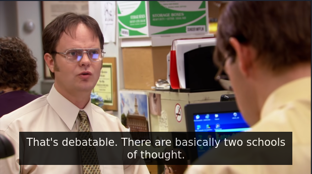
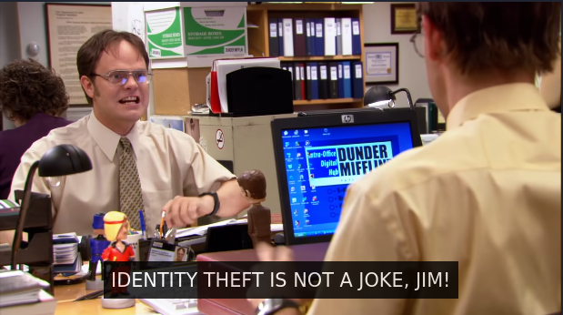

Little about myself: I like watching the office. My favourite character is Jim. I enjoy playing video games and TTRPGs, watching movies, and solving problems. I dream of a world where I can work for fun.
One of my favourite office pranks is of course the one these headers are inspired by. My all-time favourite however would have to be Asian Jim. They actually did that prank again with Ryan Reynolds in a recent "interview" for their movie IT.
I play games in every genre short of sports for the most part. My steam library says I have the most hours in Stardew Valley, and it's definitely one of my favourites. I also love Minecraft, Rimworld, and many others.
The two TTRPGs I've played the most of are Dungeons & Dragons 5th Edition, as well as Stars Without Number. I don't have much experience with other games so those are my favourites. I just love to play pretend with my friends. Even in adulthood!
I've watched so many movies in my life so far. The ones that have left the biggest impression on me would have to be the LOTR trilogy, Monty Python and the Holy Grail, and of course Kung Fu Panda.
Someday I want to make a mostly passive income and spend my time working on the things I love. Instead of doing whatever I need to do to keep the lights on.
